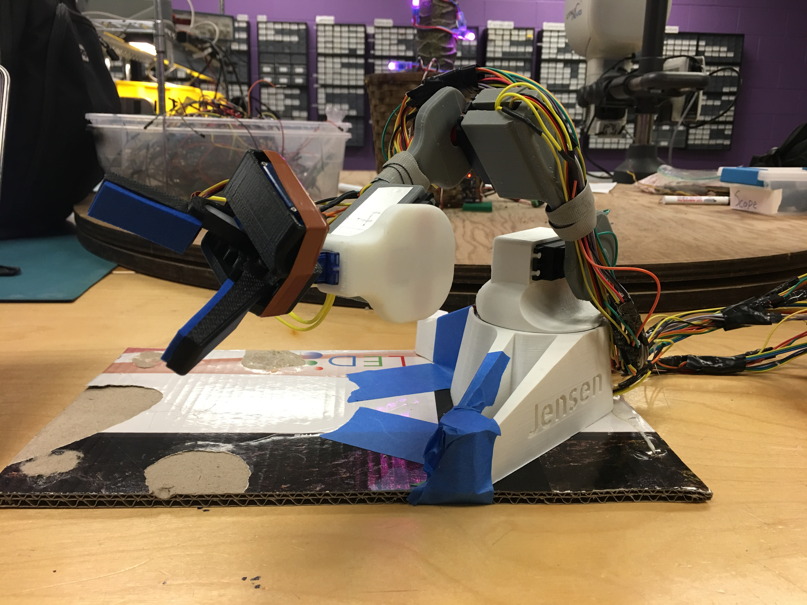
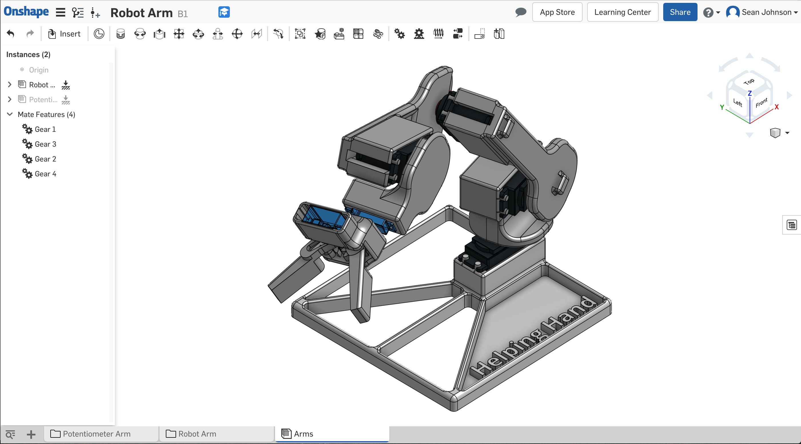
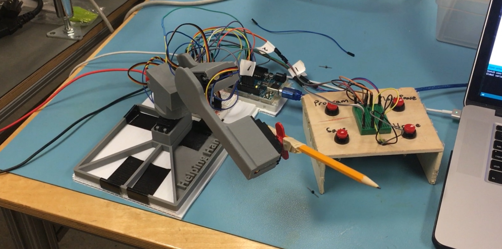
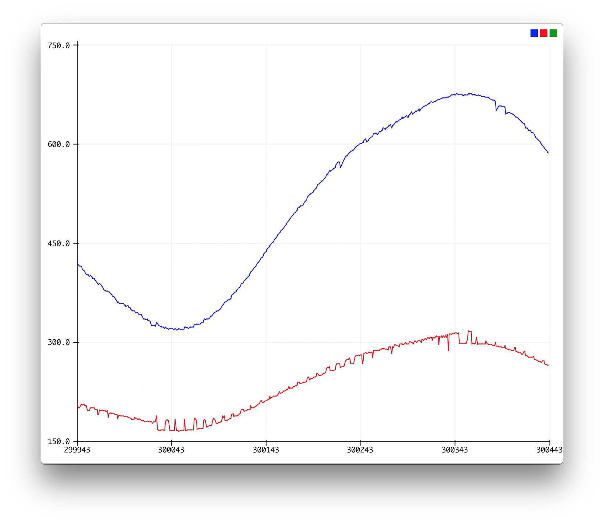
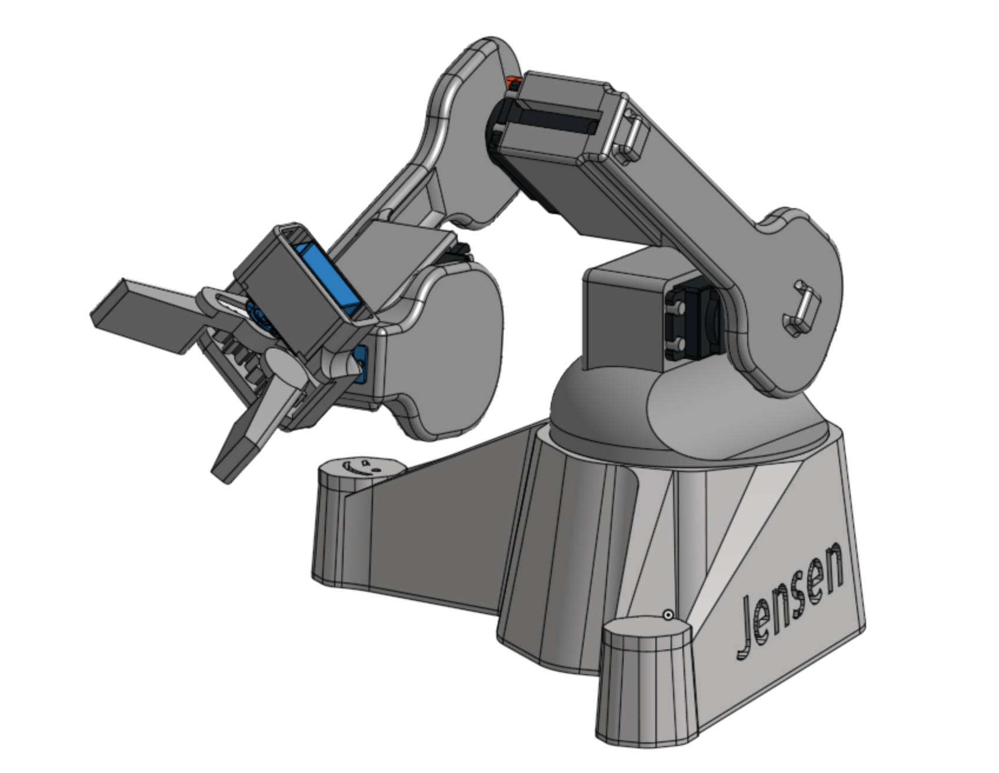

Jensen
Jensen is a robotic arm built on the Arduino platform with a focus on intuitive motion planning, done as a 1 credit independent project under mentorship from Charles B. Malloch, PhD. It can replicate a series of movements programmed by manually moving the arm. I got the inspiration to build it from seeing other robotic arms built in the UMass Amherst M5 makerspace. Furthermore, I wanted to learn how to use CAD software and I wanted to make an advanced Arduino project. I saw this as an opportunity to do all those things.
Original Design and Scope

The CAD software I chose to learn for this project was OnShape, and the first thing I modeled was a HiTec HS-422 analog servo. I chose the servo because it was available to me locally and it was a reasonable price. It also served as good practice for learning OnShape before moving on to designing my own parts. At this early point in the project, I had general idea of what I wanted the arm to be capable of. I wanted it to have a decent range of motion and a gripper for picking things up. These general specifications informed the design as I continued modeling it in CAD. One other design constraint I had at this point was the size of the print bed on my 3D printer. That's why the base you see in the photo above is a relatively primitive square.
During this stage of the project, I was also brainstorming how I wanted to control the arm. One robotic arm I had been inspired by in the makerspace used a puppet arm for control. Another used an intuitive path programming method in which the arm was moved into various positions by the user. The arm would then cycle back through those positions.
My original plan was to finish the construction of the arm and then implement both of these control methods. I also wanted to make a computer application for controlling it at some point after that. As you can probably tell, I ended up reducing the scope of this aspect of the project. When I started working on those first two control methods, I quickly found that the intuitive path programming one was more complicated than I thought it would be. That's when I decided to make it my focus and put the other control methods on indefinite hold.
Control

The method of control that I chose works like this: you move the arm with your hands into various positions and "save" those positions. Each position has information about the angle between each link of the arm. After you are done saving positions, you hit a playback button and the arm returns to each one of those positions in sequence.
In this control method, there were many things to figure out. In order for each servo to return to a saved angle, I had to somehow "save" those angles in the first place. This required the Arduino Uno I was using to be able to receive the current angle of each servo. My friend Jeremy Paradie, who made a robotic arm that uses this control method, clued me in to using the internal potentiometer of each hobby servo. This is the potentiometer that the servo uses itself to encode its angle. I chose a test servo, soldered a wire to the middle pin of the internal potentiometer, and drilled a hole in the enclosure to feed the wire outside.
I could now receive the current angle by reading the voltage on the middle pin of the potentiometer. However, there were two new problems. Firstly, there was noise in the form of voltage spikes on the signal coming from the middle pin. This problem became a real issue later. Secondly, the range of values for sending an angle and receiving an angle were different.
Telling the hobby servo motors to move to some angle between 0 and 180 degrees involves sending it a PWM signal with a high time corresponding to the angle. Contrarily, using an analog input pin of the Arduino to read the voltage on the middle pin of the potentiometer while moving the servo horn between 0 and 180 degrees returns a separate range of values. Therefore, some math was needed to translate a saved input value into the corresponding PWM output value needed to return the servo to the same angle.
My first thought was to use a simple range map to find the corresponding output PWM for each saved angle. This worked, but it was not very precise. In the case of my project, the range of PWM high time values corresponding with an angle range of 180 degrees was much larger than the range of analog input values. Additionally, both of these ranges were not continuous and composed of only integers. Therefore when I mapped a saved input value to an output value, precision was lost. It was at this point I figured I needed a control loop to get my servos where they needed to be.
I wrote code for a PID control loop in which the input was the middle pin voltage and the output was the PWM output, but quickly discovered that I only needed integral control. In this scenario, the output and the input both represented angles, so adding proportional and derivative control tended to make it overshoot or have undesirable behavior. After tuning the integral control, there were still two problems. Firstly, if the initial error between the current and desired angle was large, the servo would accelerate too quickly. I could reduce the constant for the integral control, but that made the overall motion too slow. Secondly, the motion was jittery. This was a result of the noise on the analog input signal. The control loop was continuously reading this signal, so the voltage spikes caused jittery motion. (At this point I also moved from my one test servo to the assembly pictured above. I also made a control loop object for each servo in the software.)
I solved the problem of overly quick acceleration by putting an exponentially weighted moving average (EWMA) filter on the output. By averaging the output, the big spikes in motion were reduced (including the jitter from the noise). However, the noise on the input signal was still a problem, so the next stage of my project was trying to solve that.
Noise

Pictured above:
In red: input signal
In blue: signal after processingThe first step in reducing the noise on the input signal was understanding its cause. Probing the signal on an oscilloscope revealed that the voltage spikes were happening at a rate of 50Hz. I happened to know that the PWM signal being sent to the servos was also at a rate of 50Hz, so I guessed the voltage spikes had something to do with that. I hypothesized that the movement of the servos was somehow causing voltage spikes on the V+ pin of the potentiometers, which in turn was messing up the reading on the middle pin.
Here is where I made my first attempt at reducing the noise. I opened up each servo again and added a wire coming from the V+ pin on the potentiometer. I needed more analog inputs to read them than the Arduino Uno had, so I also moved to an Arduino Mega at this point. In my code, I changed the angle input from being an analog reading of the voltage on the middle pin to a ratio between the voltage on the middle pin to the voltage on the V+ pin. My hope was that if there was a voltage spike on the pins, it would cancel out in the ratio.
I put everything back together and tested it, but the spikes were still happening. What I should have done at this point was probe my ground. Instead, my next idea was to put the potentiometers on a separate power supply entirely. I disconnected the V+ wires from the analog inputs on the Arduino, and hooked them up to a separate power supply. I had probed the pins before so I knew what voltage to power them at. I also snipped the connection between the control board and V+ pin in each servo. I put everything back together, reverted the angle input code to how it was before, and then tested it. As expected, there were no more voltage spikes on the input pin. However, there was a new problem - putting the potentiometers on a separate power supply had completely messed up the internal control loops of the servos. Even though the V+ pins were receiving the same voltage as before, the movement of the servos was erratic and unstable.
I did not understand why this was happening, so I finally probed my ground connection in the servos. There was an average voltage drop of about 0.3 Volts across ground, and it spiked even higher when the servos drew current. It was clear to me then that those pins could no longer be considered "ground," and could better be described as "reference" pins. The control boards in the servos must have been measuring the voltage on the middle pin of the potentiometer relative to both the voltage on the V+ and reference pins. Powering the potentiometers separately messed up that relative measurement because now instead of a voltage spike happening on all the pins, it only happened on the reference pin.
My mentor, Dr. Malloch, helped me debug all of this and suggested I also measure the voltage on the middle pin relative to the other pins. That is what I did for my third and final attempt at reducing the noise of the angle input. I opened up each servo, reattached the wire I had snipped, and added a third wire coming from the reference pin on the potentiometer. In my code, I made the angle input equivalent to the following expression: (middle pin - reference pin) / (V+pin - reference pin). I tested it and it successfully reduced the effects of the voltage spikes. In addition, I also put an EWMA filter on this input. This processed signal and the original signal are pictured above.
Wrapping Things Up

With the noise problem solved to the best of my abilities, I set about fixing and making the final parts of the design. The arm was putting too much weight on the servo in the base, so I made a new base that supports the weight of the arm using a large bearing. I also printed the gripper and did a bit of sanding on it to get it working.
I am very pleased with the final result. The intuitive motion planning works consistently and the movement is smooth and accurate, considering everything. If someone else wanted to make this project, I would first strongly encourage them to make a simpler version of it. In hindsight, making something like this using hobby servo motors was very naive, and the difficulty I had getting it working goes to show that. I consider it a miracle that the arm works as well as it does. I still want to make a robotic arm that can interface with a computer, run more complex programs, and move with greater precision, so for my next project I'll do that. I'll use high quality digital robotics servos, and hopefully that will let me avoid many of the problems I encountered in this project.